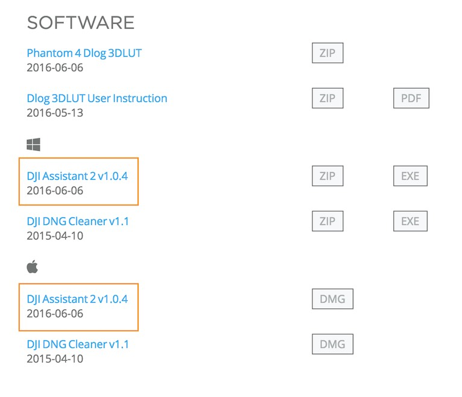
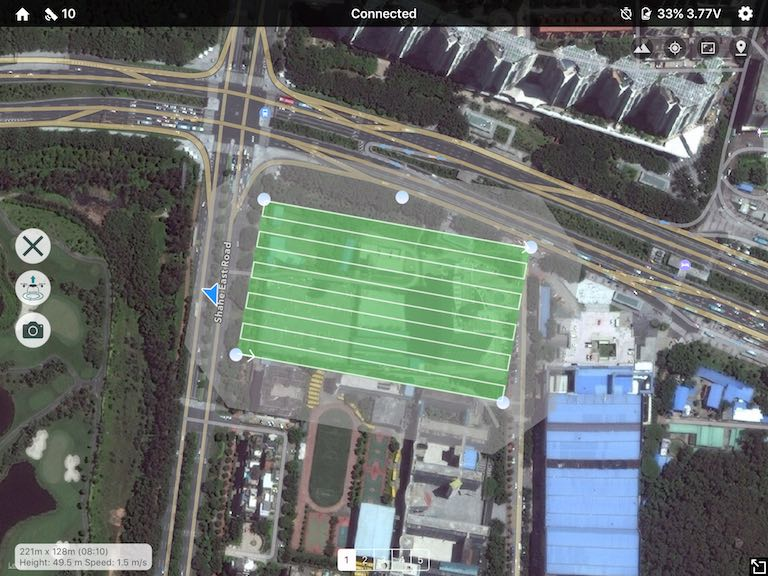
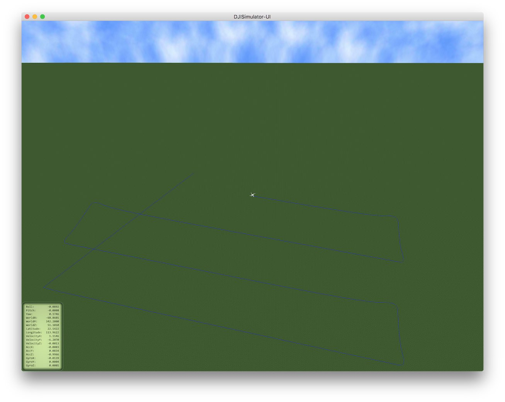

Learn how to use Altizure App in DJI Simulator? (Mavic, P4, Inspire 2, M600, etc.)
Supported UAVs
- Spark
- Mavic Pro
- Phantom 4 (4 / 4 Advanced / 4 Pro)
- Inspire 2
- M600, M200, M210, etc.
- A3, N3, etc.
Supported Platforms
- Windows
- macOS
1. Download and run DJI Assistant 2
Please go to DJI's product page. In the SOFTWARE section, download and install DJI Assistant 2 on your computer.
- Download for Phantom 4
- Download for Phantom 4 Pro
- Download for Inspire 2
- Download for M600
- Download for Mavic Pro
- Download for Inspire 2

2. Connect your aircraft to computer
Open DJI Assistant 2. Then, open your aircraft with propellers detached. Use a USB cable to connect your aircraft and computer.


Below is the screenshot of DJI Assistant 2 when Phantom 4 is connected:

3. Start simulator
Click Simulator in left panel. Enter the Latitude and Longitude near you. This will be the simulated location of your aircraft. Then, click Start Simulating.

4. Try Altizure App
Connect your remote controller with Altizure app. In Altizure app, find the simulated location of your aircraft on the map in Altizure app, and start a new mission.

Tips
- Here is a DJI Guideon using the simulator.
- Under the simulation mode, your aircraft will still take photos. So, after simulation, you may need to delete these photos to free up space in SD card.
- Scroll your mouse wheels to zoom in/out in simulator.
Right click the simulator, select Setup, tick Show Trace, then you can see the flight path.

Last modified at Sat May 19 2018 17:22:10 GMT+0800 (HKT)